对于任何在docker使用的服务器要注意数据/配置持久化的问题
MySQL
问题0：版本选择
- 8.0 已于 2026 年 4 月停止支持（最后版本 8.0.46），但不代表不能使用
- 8.4 LTS完整支持到 2029 年 4 月，扩展安全支持到 2032 年 4 月
选择8.2.10为镜像运行容器，注意8.4许多参数、配置、插件和8.0大不相同
问题1：配置设置
配置文件在容器路径/etc/mysql/conf.d/my.cnf
8.4的存储层 server，database 默认字符集已经是 utf8mb4
character_set_client / connection / results 是 latin1可能需要修改
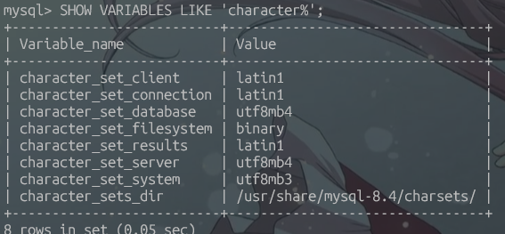
排序
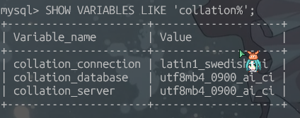
时区
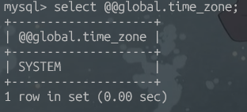
慢查询日志
问题2：持久化数据问题
容器出现异常或者被删除时可以通过镜像再次run，但是之前的数据全部丢失
MySQL 官方镜像把数据/慢查询日志放容器目录 /var/lib/mysql
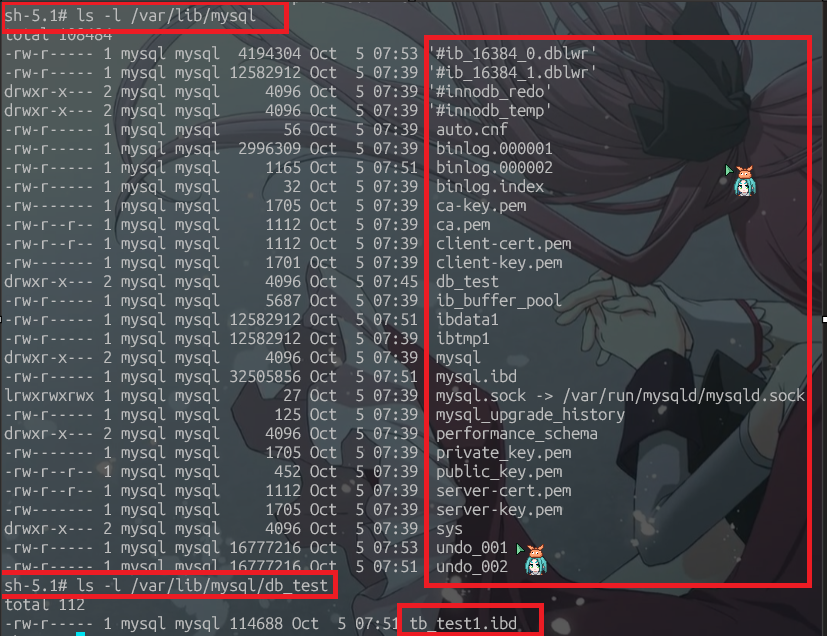
单机版部署
- 挂载配置（字符集、时区、排序、慢查询日志配置）
- 挂载库表日志数据
1
2
3
4
5
6
7
8
9
10
11
12
13
14
15
|
------------my.cnf--------------
[mysqld]
character-set-server=utf8mb4 #字符集
collation-server=utf8mb4_0900_ai_ci #排序
slow_query_log = 1 #慢查询日志
long_query_time = 1 #慢查询阈值
log_output = FILE #输出 （默认/var/lib/mysql/容器id-slow.log）
default-time-zone = '+08:00' #时区
[client]
default-character-set=utf8mb4 #字符集
[mysql]
default-character-set=utf8mb4 #字符集
|
1
2
3
4
5
6
7
8
9
10
11
12
13
14
15
16
17
18
19
20
|
## 拉取长期支持版
docker pull mysql:8.4.11
## 运行容器
docker run \
-dp 3306:3306 \ # 端口映射
--name mysql-single \ # 命名
-e MYSQL_ROOT_PASSWORD=3306 \ # 设置密码
-v /home/admin/docker/mysql/single/data/:/var/lib/mysql/ \ # 挂载库表日志数据目录
-v /home/admin/docker/mysql/single/my.cnf:/etc/mysql/conf.d/my.cnf:ro \ # 挂载配置文件
mysql:8.4.11
复制运行版
docker run \
-dp 3306:3306 \
--name mysql-single \
-e MYSQL_ROOT_PASSWORD=3306 \
-v /home/admin/docker/mysql/single/data/:/var/lib/mysql/ \
-v /home/admin/docker/mysql/single/my.cnf:/etc/mysql/conf.d/my.cnf:ro \
mysql:8.4.11
|
主从版部署
要使用容器名作IP不能使用默认网络
1
|
docker network create -d bridge mysql-cluster
|
主节点
1
2
3
4
5
6
7
8
9
10
11
12
13
14
15
16
17
18
19
20
21
22
23
24
25
26
|
------------my.cnf--------------
[client]
default-character-set=utf8mb4 #字符集
[mysql]
default-character-set=utf8mb4 #字符集
[mysqld]
character-set-server=utf8mb4 #字符集
collation-server=utf8mb4_0900_ai_ci #排序
slow_query_log = 1 #慢查询日志
long_query_time = 1 #慢查询阈值
log_output = FILE #输出 （默认/var/lib/mysql/容器id-slow.log）
default-time-zone = '+08:00' #时区
# 主从配置
server_id=01
binlog-ignore-db=mysql
log-bin=master-log-bin
binlog_cache_size=1M
binlog_format=mixed
binlog_expire_logs_seconds = 604800
slave_skip_errors=1062
gtid_mode = ON
enforce_gtid_consistency = ON
log_slave_updates = ON
|
1
2
3
4
5
6
7
8
|
docker run \
-dp 3307:3306 \
--network mysql-cluster \
--name mysql-master \
-e MYSQL_ROOT_PASSWORD=3307 \
-v /home/admin/docker/mysql/cluster/master/data/:/var/lib/mysql/ \
-v /home/admin/docker/mysql/cluster/master/my.cnf:/etc/mysql/conf.d/my.cnf:ro \
mysql:8.4.11
|
进入容器创建从节点用户并授权（会持久化到数据卷）
1
2
3
|
docker exec -it mysql-master mysql -uroot -p3307 -e "
CREATE USER IF NOT EXISTS 'slave'@'%' IDENTIFIED BY '3308';
GRANT REPLICATION SLAVE ON *.* TO 'slave'@'%';"
|
从节点
1
2
3
4
5
6
7
8
9
10
11
12
13
14
15
16
17
18
19
20
21
22
23
24
25
26
27
28
|
# ------------my.cnf--------------
[client]
default-character-set=utf8mb4 #字符集
[mysql]
default-character-set=utf8mb4 #字符集
[mysqld]
character-set-server=utf8mb4 #字符集
collation-server=utf8mb4_0900_ai_ci #排序
slow_query_log = 1 #慢查询日志
long_query_time = 1 #慢查询阈值
log_output = FILE #输出 （默认/var/lib/mysql/容器id-slow.log）
default-time-zone = '+08:00' #时区
# 主从配置
server_id=02
binlog-ignore-db=mysql
log-bin=slave-log-bin
binlog_cache_size=1M
binlog_format=mixed
binlog_expire_logs_seconds = 604800
slave_skip_errors=1062
gtid_mode = ON
enforce_gtid_consistency = ON
log_slave_updates = ON
relay_log=relay-log-bin
read_only=1
|
1
2
3
4
5
6
7
8
|
docker run \
-dp 3308:3306 \
--name mysql-slave \
--network mysql-cluster \
-e MYSQL_ROOT_PASSWORD=3308 \
-v /home/admin/docker/mysql/cluster/slave/data/:/var/lib/mysql/ \
-v /home/admin/docker/mysql/cluster/slave/my.cnf:/etc/mysql/conf.d/my.cnf:ro \
mysql:8.4.11
|
进入容器指定主节点（会持久化到数据卷）
1
2
3
4
5
6
7
8
9
10
11
12
|
docker exec -it mysql-slave mysql -uroot -p3308 -e "
CHANGE REPLICATION SOURCE TO
SOURCE_HOST='mysql-master',
SOURCE_PORT=3306,
SOURCE_USER='slave',
SOURCE_PASSWORD='3308',
SOURCE_AUTO_POSITION=1,
GET_SOURCE_PUBLIC_KEY=1;
START REPLICA;"
// 查看同步线程是否启动
docker exec -it mysql-slave mysql -uroot -p3308 -e "show replica status \G"
|
主从效果展示
- 从节点replica_io同步线程成功开启
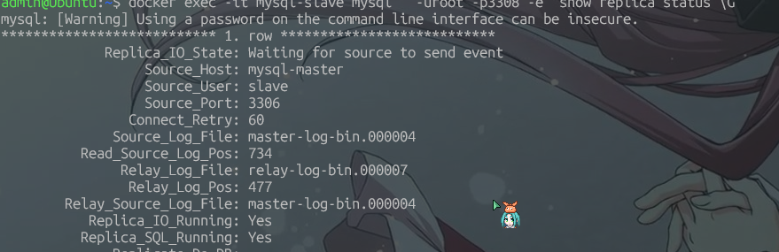
- 从windows powershell连接wsl docker中的mysql并插入
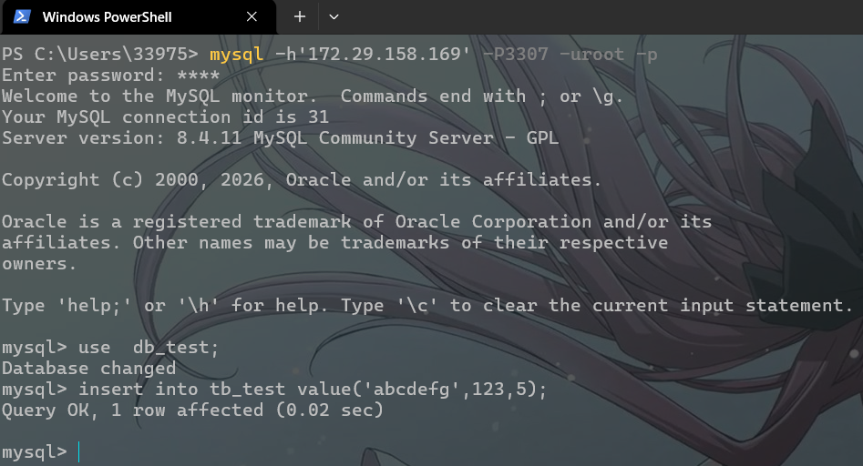
- 从mysql主节点和从节点容器查看同步效果
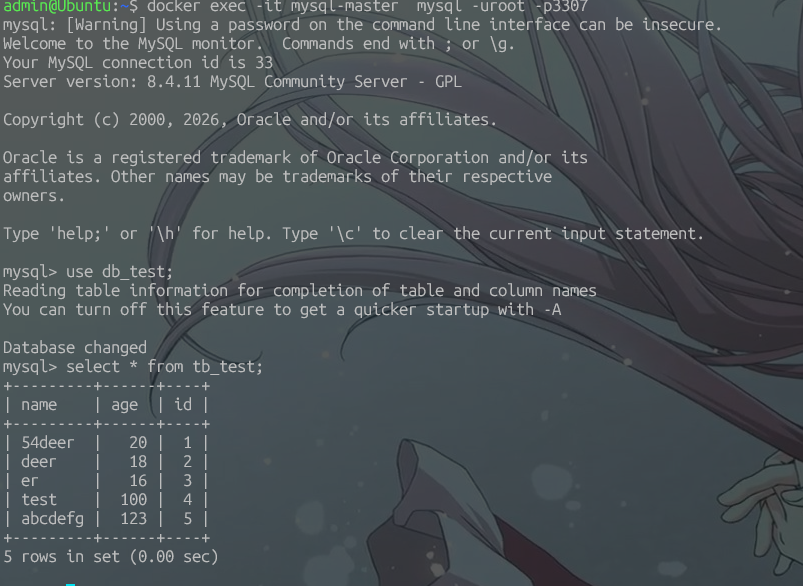
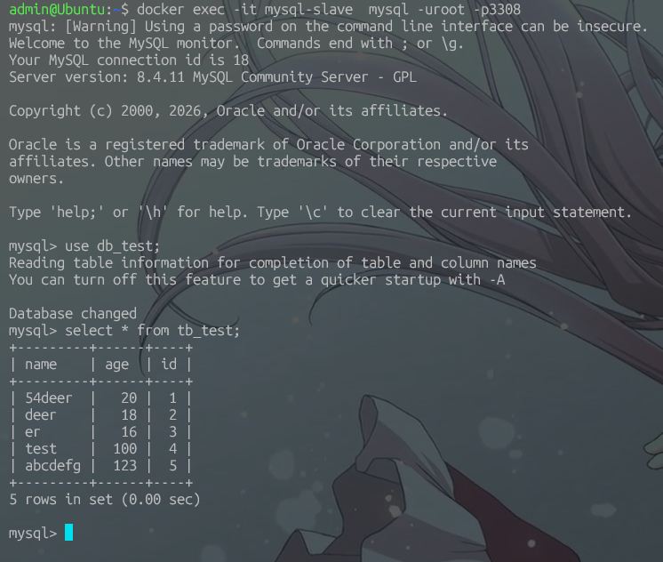
现象/踩坑总结
| # |
现象/报错 |
原因 |
解决 |
| 1 |
unknown variable 'expire_logs_days' 启动中止 |
8.4 删除该参数 |
改用 binlog_expire_logs_seconds=604800 |
| 2 |
slave_skip_errors/log_slave_updates 废弃警告 |
8.4 术语更名 |
改用 replica_skip_errors/log_replica_updates |
| 3 |
Table 'mysql.user' doesn't exist |
数据目录残留半初始化文件 |
sudo rm -rf data 清空重建 |
| 4 |
rm: Permission denied |
文件属主是容器 mysql 用户 |
加 sudo 或用 alpine 容器删除 |
| 5 |
ERROR 1410 not allowed to create a user with GRANT |
建的是 slaver 授权给 slave，8.0+ 禁止隐式建用户 |
CREATE USER 与 GRANT 用户名保持一致 |
| 6 |
ERROR 1064 语法错误 |
8.4 删除 CHANGE MASTER TO 等旧命令 |
改用 CHANGE REPLICATION SOURCE TO / START REPLICA / SHOW REPLICA STATUS |
| 7 |
ERROR 2005 Unknown MySQL server host 'mysql-master' |
默认 bridge 网络不支持容器名解析 |
自建网络 --network mysql-cluster |
| 8 |
从库连不上主库 |
误用宿主机映射端口 3307 |
容器间用内部端口 3306 |
| 9 |
Authentication requires secure connection |
8.0+ 默认 caching_sha2_password 拒绝明文 |
加 GET_SOURCE_PUBLIC_KEY=1 或改认证插件 |
| 10 |
ERROR 1524 Plugin 'mysql_native_password' is not loaded |
8.4 默认不加载该插件 |
主库配置加 mysql_native_password=ON，或直接用坑 9 |
| 11 |
重建容器后复制自动恢复主从连接 |
复制配置存在数据卷中 |
RESET REPLICA ALL 可清除 |
redis
| 版本 |
类型 |
EOL |
| 8.10 / 8.8 / 8.6 / 8.4 |
标准版（发布后约 6 个月 + 半年缓冲） |
较短，随新版发布逐步停止 |
| 8.2 |
扩展版 |
2030-09-01 |
| 8.0 |
标准版 |
2026-12-01 |
| 选择8.2.10为镜像运行容器 |
|
|
容器内配置文件路径 /etc/redis/redis.conf （ 随意指定容器里默认没有配置文件，运行时指定该路径 ）
容器内持久化数据文件路径 /data （ 通过配置文件指定 ）
单机版部署
使用redis配置文件模板
1
2
3
4
5
6
7
|
docker run \
--name redis-single \
-v /home/admin/docker/redis/single/redis.conf:/etc/redis/redis.conf \
-v /home/admin/docker/redis/single/data:/data \
-dp 6379:6379 \
redis:8.2.10 \
redis-server /etc/redis/redis.conf #以指定配置文件运行
|
一主二从三哨兵部署
复制三份配置文件，只需主节点开启持久化即可
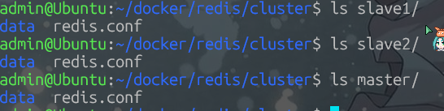
主从节点在redis配置文件模板追加
1
2
|
slave-announce-ip 172.30.0.10 # docker宿主机ip(如果是wsl/虚拟机建议固定) / 实际服务器ip
slave-announce-port 6380/6381/6382 # 根据当前 redis 对外暴露的端口号填写
|
1
2
3
4
5
6
7
8
9
10
11
12
13
14
15
16
17
18
19
20
21
22
23
|
# 哨兵配置文件
protected-mode no
port 26379
daemonize no
pidfile /var/run/redis-sentinel.pid
logfile ""
dir /tmp
sentinel down-after-milliseconds mymaster 30000
acllog-max-len 128
sentinel failover-timeout mymaster 180000
sentinel deny-scripts-reconfig yes
SENTINEL resolve-hostnames no
SENTINEL announce-hostnames no
SENTINEL master-reboot-down-after-period mymaster 0
# 监视的主节点
sentinel monitor mymaster 172.30.0.10 6380 2
# 己所在服务器ip
sentinel announce-ip 172.30.0.10
# 自己暴露的端口
sentinel announce-port 26379/26380/26381
# 主节点密码
sentinel auth-pass mymaster 6379
|
1
2
3
4
5
6
7
8
9
10
11
12
13
14
15
16
17
18
19
20
21
22
23
24
25
26
27
28
29
30
31
32
33
34
35
36
37
38
39
40
41
42
43
44
45
46
47
|
// 主节点启动
docker run \
--name redis-master \
-v /home/admin/docker/redis/cluster/master/redis.conf:/etc/redis/redis.conf \
-v /home/admin/docker/redis/cluster/master/data:/data \
-dp 6380:6379 \
redis:8.2.10 \
redis-server /etc/redis/redis.conf #以指定配置文件运行
// 从节点1启动
docker run \
--name redis-slave1 \
-v /home/admin/docker/redis/cluster/slave1/redis.conf:/etc/redis/redis.conf \
-v /home/admin/docker/redis/cluster/slave1/data:/data \
-dp 6381:6379 \
redis:8.2.10 \
redis-server /etc/redis/redis.conf --slaveof 172.30.0.10 6380 #以指定配置文件/主节点运行
// 从节点2启动
docker run \
--name redis-slave2 \
-v /home/admin/docker/redis/cluster/slave2/redis.conf:/etc/redis/redis.conf \
-v /home/admin/docker/redis/cluster/slave2/data:/data \
-dp 6382:6379 \
redis:8.2.10 \
redis-server /etc/redis/redis.conf --slaveof 172.30.0.10 6380 #以指定配置文件/主节点运行
// 哨兵1启动
docker run --name redis-sentinel1 \
-v /home/admin/docker/redis/cluster/sentinel1/sentinel.conf:/etc/redis/sentinel.conf \
-dp 26379:26379 \
redis:8.2.10 \
redis-sentinel /etc/redis/sentinel.conf
// 哨兵2启动
docker run --name redis-sentinel2 \
-v /home/admin/docker/redis/cluster/sentinel2/sentinel.conf:/etc/redis/sentinel.conf \
-dp 26380:26379 \
redis:8.2.10 \
redis-sentinel /etc/redis/sentinel.conf
// 哨兵3启动
docker run --name redis-sentinel3 \
-v /home/admin/docker/redis/cluster/sentinel3/sentinel.conf:/etc/redis/sentinel.conf \
-dp 26381:26379 \
redis:8.2.10 \
redis-sentinel /etc/redis/sentinel.conf
|
查看主从关系与哨兵
1
2
3
|
docker exec -it redis-master redis-cli -a 6379 info replication
docker exec -it redis-slave1 redis-cli -a 6379 info replication
docker exec -it redis-sentinel1 redis-cli -p 26379 info sentinel
|
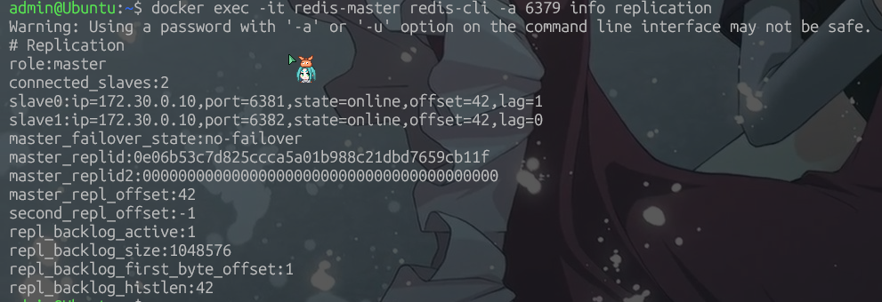
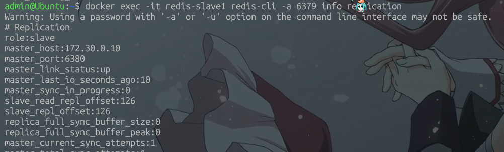
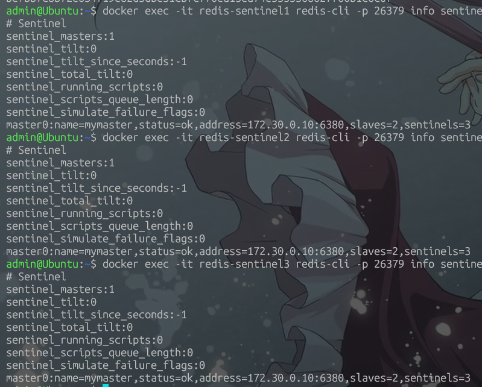
查看主从同步效果
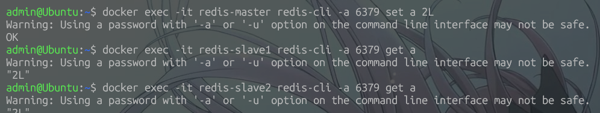
查看故障转移效果
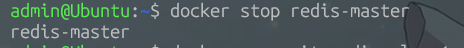
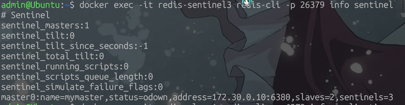
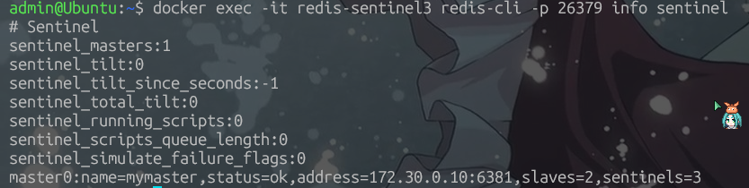
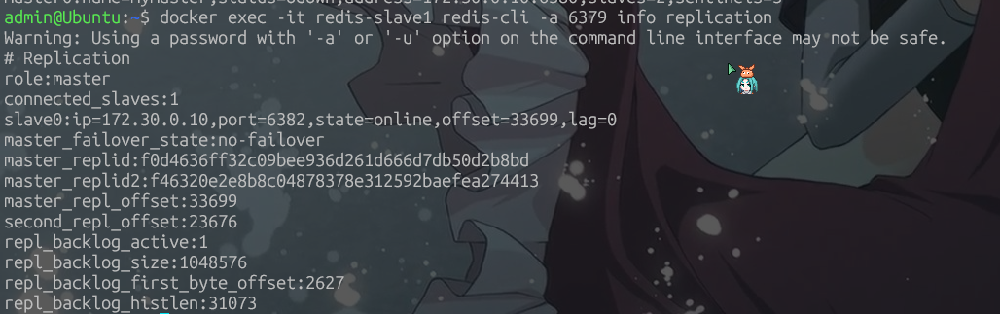
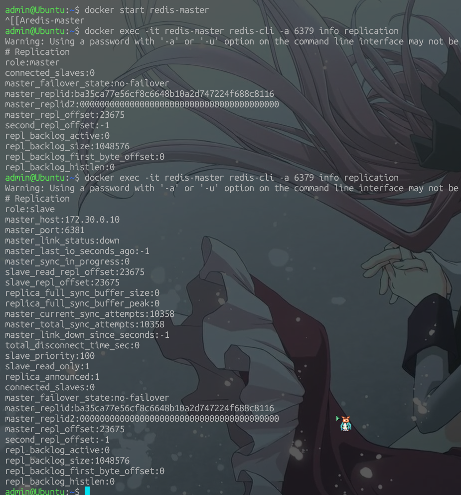
分布式插槽（1主2从 * n + 哨兵集群）
太懒，不怎么用的上，不做了
redis配置文件模板
1
2
3
4
5
6
7
8
9
10
11
12
13
14
15
16
17
18
19
20
21
22
23
24
25
26
27
28
29
30
31
32
33
34
35
36
37
38
39
40
41
42
43
44
45
46
47
48
49
50
51
52
53
54
55
56
57
58
59
60
61
62
63
64
65
66
67
68
69
70
71
72
73
74
75
76
77
78
79
80
81
82
83
84
85
86
87
88
89
90
91
92
93
94
95
96
97
98
99
100
101
102
103
104
105
106
107
108
109
110
111
112
113
114
115
116
117
118
119
120
121
122
123
124
125
126
127
128
129
130
131
132
133
134
135
136
137
138
139
140
141
142
143
144
145
146
147
148
149
150
151
152
153
154
155
156
157
158
159
160
161
162
163
164
165
166
167
168
169
170
171
172
173
174
175
176
177
178
179
180
181
182
183
184
185
186
187
188
189
190
191
192
193
194
195
196
|
requirepass 6379
# include /path/to/local.conf
# include /path/to/other.conf
# include /path/to/fragments/*.conf
# loadmodule /path/to/my_module.so
# loadmodule /path/to/other_module.so
# bind 192.168.1.100 10.0.0.1 # listens on two specific IPv4 addresses
# bind 127.0.0.1 ::1 # listens on loopback IPv4 and IPv6
# bind * -::* # like the default, all available interfaces
# bind 127.0.0.1 -::1
# bind-source-addr 10.0.0.1
# protected-mode yes
# enable-protected-configs no
# enable-debug-command no
# enable-module-command no
port 6379
tcp-backlog 511
# unixsocket /run/redis.sock
# unixsocketperm 700
timeout 0
tcp-keepalive 300
# socket-mark-id 0
# port 0
# tls-port 6379
# tls-cert-file redis.crt
# tls-key-file redis.key
# tls-key-file-pass secret
# tls-client-cert-file client.crt
# tls-client-key-file client.key
# tls-client-key-file-pass secret
# tls-dh-params-file redis.dh
# tls-ca-cert-file ca.crt
# tls-ca-cert-dir /etc/ssl/certs
# tls-auth-clients no
# tls-auth-clients optional
# tls-replication yes
# tls-cluster yes
# tls-protocols "TLSv1.2 TLSv1.3"
# tls-ciphers DEFAULT:!MEDIUM
# tls-ciphersuites TLS_CHACHA20_POLY1305_SHA256
# tls-prefer-server-ciphers yes
# tls-session-caching no
# tls-session-cache-size 5000
# tls-session-cache-timeout 60
# daemonize no
# supervised auto
pidfile /var/run/redis_6379.pid
loglevel notice
logfile ""
# syslog-enabled no
# syslog-ident redis
# syslog-facility local0
# crash-log-enabled no
# crash-memcheck-enabled no
databases 16
always-show-logo no
set-proc-title yes
proc-title-template "{title} {listen-addr} {server-mode}"
# save <seconds> <changes> [<seconds> <changes> ...]
# save ""
# save 3600 1 300 100 60 10000
stop-writes-on-bgsave-error yes
rdbcompression yes
rdbchecksum yes
# sanitize-dump-payload no
dbfilename dump.rdb
rdb-del-sync-files no
dir /data
# replicaof <masterip> <masterport>
# masterauth <master-password>
# masteruser <username>
replica-serve-stale-data yes
replica-read-only yes
repl-diskless-sync yes
repl-diskless-sync-delay 5
repl-diskless-sync-max-replicas 0
repl-diskless-load disabled
# repl-ping-replica-period 10
# repl-timeout 60
repl-disable-tcp-nodelay no
# repl-backlog-size 1mb
# repl-backlog-ttl 3600
replica-priority 100
# propagation-error-behavior ignore
# replica-ignore-disk-write-errors no
# replica-announced yes
# min-replicas-to-write 3
# min-replicas-max-lag 10
# replica-announce-ip 5.5.5.5
# replica-announce-port 1234
# tracking-table-max-keys 1000000
acllog-max-len 128
# aclfile /etc/redis/users.acl
# requirepass 111
# acl-pubsub-default resetchannels
# rename-command CONFIG b840fc02d524045429941cc15f59e41cb7be6c52
# rename-command CONFIG ""
# rename-command flushall ""
# rename-command flushdb ""
# maxclients 10000
# maxmemory <bytes>
# maxmemory-policy noeviction
# maxmemory-samples 5
# maxmemory-eviction-tenacity 10
# replica-ignore-maxmemory yes
# active-expire-effort 1
lazyfree-lazy-eviction no
lazyfree-lazy-expire no
lazyfree-lazy-server-del no
replica-lazy-flush no
lazyfree-lazy-user-del no
lazyfree-lazy-user-flush no
# io-threads 4
# io-threads-do-reads no
oom-score-adj no
oom-score-adj-values 0 200 800
disable-thp yes
appendonly no
appendfilename "appendonly.aof"
appenddirname "appendonappendonappendonappendonappendonappendonappendonappendonappendonlydir"
# appendfsync always
appendfsync everysec
# appendfsync no
no-appendfsync-on-rewrite no
auto-aof-rewrite-percentage 100
auto-aof-rewrite-min-size 64mb
aof-load-truncated yes
aof-use-rdb-preamble yes
aof-timestamp-enabled no
# shutdown-timeout 10
# shutdown-on-sigint default
# shutdown-on-sigterm default
# lua-time-limit 5000
# busy-reply-threshold 5000
# cluster-enabled yes
# cluster-config-file nodes-6379.conf
# cluster-node-timeout 15000
# cluster-port 0
# cluster-replica-validity-factor 10
# cluster-migration-barrier 1
# cluster-allow-replica-migration yes
# cluster-require-full-coverage yes
# cluster-replica-no-failover no
# cluster-allow-reads-when-down no
# cluster-allow-pubsubshard-when-down yes
# cluster-link-sendbuf-limit 0
# cluster-announce-hostname ""
# cluster-preferred-endpoint-type ip
# cluster-announce-ip 10.1.1.5
# cluster-announce-tls-port 6379
# cluster-announce-port 0
# cluster-announce-bus-port 6380
slowlog-log-slower-than 10000
slowlog-max-len 128
latency-monitor-threshold 0
# latency-tracking yes
# latency-tracking-info-percentiles 50 99 99.9
notify-keyspace-events ""
hash-max-listpack-entries 512
hash-max-listpack-value 64
list-max-listpack-size -2
list-compress-depth 0
set-max-intset-entries 512
zset-max-listpack-entries 128
zset-max-listpack-value 64
hll-sparse-max-bytes 3000
stream-node-max-bytes 4096
stream-node-max-entries 100
activerehashing yes
# client-output-buffer-limit <class> <hard limit> <soft limit> <soft seconds>
client-output-buffer-limit normal 0 0 0
client-output-buffer-limit replica 256mb 64mb 60
client-output-buffer-limit pubsub 32mb 8mb 60
# client-query-buffer-limit 1gb
# maxmemory-clients 1g
# maxmemory-clients 5%
# proto-max-bulk-len 512mb
hz 10
dynamic-hz yes
aof-rewrite-incremental-fsync yes
rdb-save-incremental-fsync yes
# lfu-log-factor 10
# lfu-decay-time 1
# activedefrag no
# active-defrag-ignore-bytes 100mb
# active-defrag-threshold-lower 10
# active-defrag-threshold-upper 100
# active-defrag-cycle-min 1
# active-defrag-cycle-max 25
# active-defrag-max-scan-fields 1000
jemalloc-bg-thread yes
# server_cpulist 0-7:2
# bio_cpulist 1,3
# aof_rewrite_cpulist 8-11
# bgsave_cpulist 1,10-11
# ignore-warnings ARM64-COW-BUG
|